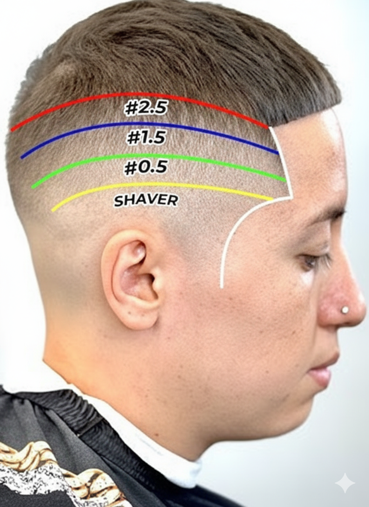

Clase 6: Degradado a Cero o Skin Fade
Consideraciones del Fade
El desvanecido o FADE es un mundo de posibilidades. Varía en altura, contraste y estilo. Las dos variantes principales son:
- Fade Comprimido: Una transición más corta y marcada, con un contraste alto.
- Fade Estirado: Se deja más espacio (aprox. 1 cm) entre cada guía, logrando una transición más suave y gradual.
Técnica
- Peine N°2 para generar el encuadre.
- Con un ancho de dos dedos, marcar el perímetro con la patillera. El perímetro y el encuadre deben tener el mismo movimiento y respetar el ancho de dos dedos.
- Rasurar dejando un ancho de medio dedo entre la patillera y la rasuradora.
- Pasar el 0 con la palanca abierta, al ancho de un dedo.
- Luego, el 0 con la palanca a la mitad, para ir degradando.
- Luego, el 0 con la palanca cerrada, para borrar el escalón inferior.
- Peine N°1 1/2 con la palanca cerrada, hasta casi llegar al encuadre hecho con el N°2. El peine N°1 1/2 determina el ancho del fade.
- Comenzar a degradar con el peine N°1 y la palanca abierta, por debajo del escalón, cuchareando.
- Luego, con el N°1 y la palanca a la mitad, repetir el mismo procedimiento.
- Comenzar a degradar con el peine N°0,5 y la palanca abierta, por debajo del escalón, cuchareando.
- Luego, con el N°0,5 y la palanca a la mitad, repetir el mismo procedimiento.
- Para eliminar detalles, usar el N°0,5 con la palanca cerrada.
- Para finalizar, conectar con tijera sobre peine el puente del encuadre.
Recordar que para degradar siempre se debe cucharear.
Terminación
Los detalles finales marcan la diferencia entre un buen corte y un corte excepcional.
- Corte Superior: Trabaja la parte de arriba, aplicando las técnicas de división y corte con tijera ya vistas.
- Peinado: Realiza un peinado de presentación para que el cliente pueda apreciar el resultado final y quede completamente satisfecho.
- Contornos: Marca los contornos con la patillera, eligiendo la forma (cuadrada o redonda) que prefiera el cliente.
- Limpieza: Por último, elimina todos los restos de cabello del cuello y rostro. Puedes hacerlo con navaja o, si el cliente tiene piel sensible, con la propia máquina.
